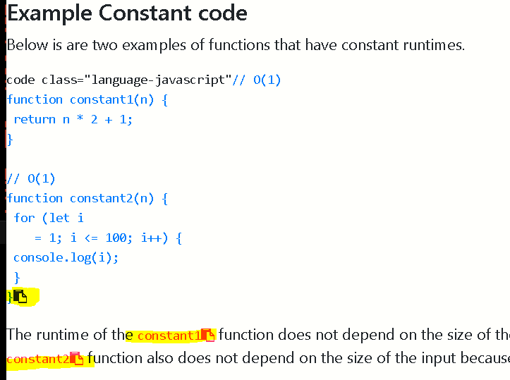

MY REPO UTILITIES NPM PACKAGE
This code is not exclusivley written by me … it is just a list of files I use often during website development… use at your own risk
Copy-2-Clipboard:

Git-Html Preview-Tool:

Markdown Templates:

Text Tools:

Automatic Table Of Contents Generator:

Text-File-2-JS-Array:

Usage:
#Useful Commands!
|| || V
1. Download Links of a specific file extension from website
wget -r -A.pdf https://overapi.com/gitwget --wait=2 --level=inf --limit-rate=20K --recursive --page-requisites --user-agent=Mozilla --no-parent --convert-links --adjust-extension --no-clobber -e robots=off2. Download Website for ofline use…
3. Recursivley remove files named cookies.txt
4. Recursivley remove lines of text contaning the string badFolder from files in the working directory.
5. Recursivley Install node_modules
6. Recursivley Exicute any sequence of commands
function RecurseDirs ()
{
oldIFS=$IFS
IFS=$'\n'
for f in "$@"
do
# YOUR CODE HERE!
for file in *; do mv "$file" `echo $file | tr ' ' '_'` ; done
if [[ -d "${f}" ]]; then
cd "${f}"
RecurseDirs $(ls -1 ".")
cd ..
fi
done
IFS=$oldIFS
}
RecurseDirs "./"
7. Copy any text between <script> tags in a file called example.html to be inserted into a new file: out.js
8. Recursivley Delete node_modules folders
9. Sanatize file and folder names to remove illegal characters and reserved words.
sanitize() {
shopt -s extglob;
filename=$(basename "$1")
directory=$(dirname "$1")
filename_clean=$(echo "$filename" | sed -e 's/[\\/:\*\?"<>\|\x01-\x1F\x7F]//g' -e 's/^\(nul\|prn\|con\|lpt[0-9]\|com[0-9]\|aux\)\(\.\|$\)//i' -e 's/^\.*$//' -e 's/^$/NONAME/')
if (test "$filename" != "$filename_clean")
then
mv -v "$1" "$directory/$filename_clean"
fi
}
export -f sanitize
sanitize_dir() {
find "$1" -depth -exec bash -c 'sanitize "$0"' {} \;
}
sanitize_dir '/path/to/somewhere'10. Start postgresql in terminal
11. Add closing body and script tags to each html file in working directory.
for f in * ; do
mv "$f" "$f.html"
doneecho "<form>
<input type="button" value="Go back!" onclick="history.back()">
</form>
</body></html>" | tee -a *.html12. Batch Download Videos
#!/bin/bash
link="#insert url here#"
#links were a set of strings with just the index of the video as the variable
num=3
#first video was numbered 3 - weird.
ext=".mp4"
while [ $num -le 66 ]
do
wget $link$num$ext -P ~/Downloads/
num=$(($num+1))
done13. Change File Extension from ‘.txt’ to .doc for all files in working directory.
14. Recursivley change any file with extension .js.download to .js
15. Copy folder structure including only files of a specific extension into an ouput Folder
PANDOC!!!
sudo apt install pandoc
1```bash pandoc -s file.txt -o file.rtf—
find ./ -iname "*.md" -type f -exec sh -c 'pandoc "${0}" -o "${0%.md}.html"' {} \;
for f in *.html; do printf '%s\n' 0a '<!DOCTYPE html>
<html lang="en">
<head>
<meta charset="UTF-8">
<meta name="viewport" content="width=device-width, initial-scale=1.0">
<title>Document</title>
<link rel="stylesheet" href="https://stackpath.bootstrapcdn.com/bootstrap/4.5.2/css/bootstrap.min.css" integrity="sha384-JcKb8q3iqJ61gNV9KGb8thSsNjpSL0n8PARn9HuZOnIxN0hoP+VmmDGMN5t9UJ0Z" crossorigin="anonymous">
<link rel="stylesheet" href="./prism.css">
<script async defer src="./prism.js"></script>
</head>
<body>;' . x | ex "$f"; done
echo "<form>
<input type="button" value="Go back!" onclick="history.back()">
</form>
</body></html>" | tee -a *.htmlcheck what you are about to delete before deleting:
find ./ | sed -E -e 's/([^ ]+[ ]+){8}//' | grep -i "\.*$">files
listing="files"
out=""
html="index.html"
out="basename $out.html"
html="index.html"
cmd() {
echo ' <!DOCTYPE html>'
echo '<html>'
echo '<head>'
echo ' <meta http-equiv="Content-Type" content="text/html">'
echo ' <meta name="Author" content="Bryan Guner">'
echo '<link rel="stylesheet" href="./assets/prism.css">'
echo ' <link rel="stylesheet" href="./assets/style.css">'
echo ' <**script** async defer src="./assets/prism.js"></**script**>'
echo " <title> directory </title>"
echo ""
echo '<style>'
echo ' a {'
echo ' color: black;'
echo ' }'
echo ''
echo ' li {'
echo ' border: 1px solid black !important;'
echo ' font-size: 20px;'
echo ' letter-spacing: 0px;'
echo ' font-weight: 700;'
echo ' line-height: 16px;'
echo ' text-decoration: none !important;'
echo ' text-transform: uppercase;'
echo ' background: #194ccdaf !important;'
echo ' color: black !important;'
echo ' border: none;'
echo ' cursor: pointer;'
echo ' justify-content: center;'
echo ' padding: 30px 60px;'
echo ' height: 48px;'
echo ' text-align: center;'
echo ' white-space: normal;'
echo ' border-radius: 10px;'
echo ' min-width: 45em;'
echo ' padding: 1.2em 1em 0;'
echo ' box-shadow: 0 0 5px;'
echo ' margin: 1em;'
echo ' display: grid;'
echo ' -webkit-border-radius: 10px;'
echo ' -moz-border-radius: 10px;'
echo ' -ms-border-radius: 10px;'
echo ' -o-border-radius: 10px;'
echo ' }'
echo ' </style>'
echo '</head>'
echo '<body>'
echo ""
#################### continue with the HTML stuff:
echo ""
echo ""
echo "<ul>"
awk '{print "<li><a href=\""$1"\">",$1," </a></li>"}' $listing
# awk '{print "<li>"};
# {print " <a href=\""$1"\">",$1,"</a></li> "}' \ $listing
echo ""
echo "</ul>"
echo "<form>
<input type="button" value="Go back!" onclick="history.back()">
</form>
</body>"
echo "</html>"
}
---
cmd $listing --sort=extension >>$htmlgit filter-branch --index-filter 'git rm -r --cached --ignore-unmatch assets/_website-components/0-DOJO/widgets-master/output/info/stats.json' HEADfind ./ | grep -i "\.html*$"
ls -R './' | awk '
/:$/&&f{s=$0;f=0}
/:$/&&!f{sub(/:$/,"");s=$0;f=1;next}
NF&&f{ print s"/"$0 }'>listing.mdRecursivley remove from all html files any lines contaning the string “badText”
#install unzip:
sudo apt install unzip
# recursivley unzip all zip files into a folder by the same name:
find . -name "*.zip" | while read filename; do unzip -o -d "`dirname "$filename"`" "$filename"; done;recursivley delete .zip files when done:
git config --global credential.helper storeexamples:
sed -i '/\.git/d' ./index.html
# Recursive
find . -type f -a \( -name "*.html" -o -name "*.js" -o -name "*.css" -o -name "*.md" \) -a -exec sed -i '/BADSTRING/d' '{}' +# recursivley remove empty files
find . -empty -type f -print -delete
# recursivley remove empty folders
find . -empty -type d -print -deleterecursively remove .git folder, .gitignore file and .gitmodules file and .gitattributes file
Recursivley remove security, release, changelog, License & contributing files
find . \( -name "*SECURITY.txt" -o -name "*RELEASE.txt" -o -name "*CHANGELOG.txt" -o -name "*LICENSE.txt" -o -name "*CONTRIBUTING.txt" -name "*HISTORY.md" -o -name "*LICENSE" -o -name "*SECURITY.md" -o -name "*RELEASE.md" -o -name "*CHANGELOG.md" -o -name "*LICENSE.md" -o -name "*CODE_OF_CONDUCT.md" -o -name "*CONTRIBUTING.md" \) -exec rm -rf -- {} +##